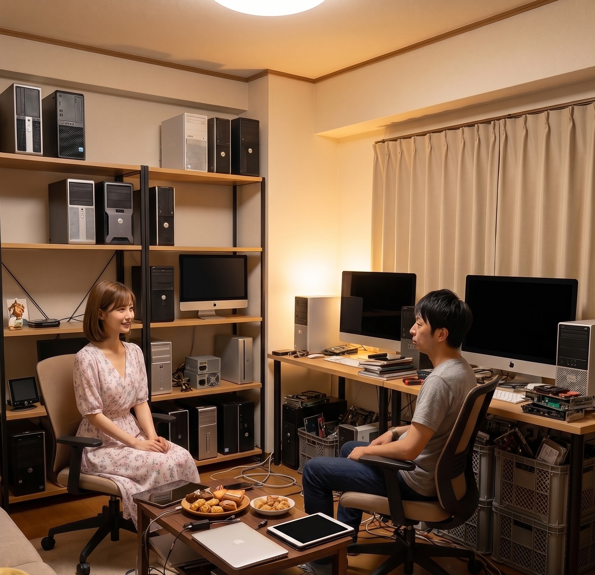

登場人物

美咲（みさき）
女子大生。就活のエントリーシートの資格欄が真っ白なことに気づき、慌ててITパスポートの勉強を開始。ITは完全に素人。高校時代は可愛くて人気者だったので、ちょっとプライドが高い。素直じゃない。

拓也（たくや）
美咲の高校時代の同級生。東京大学工学部。子どもの頃からパソコンばかりいじってきた生粋のオタク。実は美咲のことが好きだが、10年近く言い出せていない。教えるのは得意だが、口が悪いのが玉に瑕。

今日の問題
今日の問題
スマートフォンなどのタッチパネルで広く採用されている方式であり、指がタッチパネルの表面に近づいたときに、その位置を検出する方式はどれか。
- ア感圧式
- イ光学式
- ウ静電容量方式
- エ電磁誘導方式
第1幕：初めての部屋
拓也の部屋。自作PCが2台、ディスプレイが3枚、隅にはペンタブレットまで置いてある。美咲が物珍しそうにあちこち見回している。

美咲
……あんたの部屋、初めて入ったけど、想像以上に機材だらけね

拓也
あ、汚くてごめん、昨日ちょっと急いで片付けたから、まだ配線とか出しっぱなしで……

美咲
別に責めてないわよ。むしろ、なんかあんたらしくて安心した

拓也
それ、褒められてる？

美咲
さあ、どうかしら。……で、今日はこの部屋で勉強会ってことでいいのよね
拓也
うん。ちょうどいいから、今日は身近な道具を使って説明するね
拓也が自分のスマートフォンをテーブルに置く。
拓也
このタッチパネル、今日の問題にまるっと関係あるんだ
第2幕：押してるから反応してる、でしょ？

美咲
じゃあ答えるわね。これア 感圧式でしょ
拓也
お、なんでそう思った？
美咲
だって、指で画面押して操作してるじゃない。押した力を感じ取ってるから反応する、感圧式で合ってると思ったんだけど
拓也
気持ちはすごくわかる。でも実は、スマホの画面って、そんなに強く押し込んでないんだよね
美咲
え、そう？ 結構ぐいぐい押してる気がするけど
拓也
試しに、指の腹をそーっと、触れるか触れないかくらいの力で画面に近づけてみて
美咲が言われた通り、画面すれすれに指を近づける。反応して、アイコンがふわっと光る。
美咲
……え、まだ触ってすらないのに、反応した
拓也
でしょ？ "押す力"は関係ないんだ。だから、答えは感圧式じゃないんだよ
第3幕：指先の"見えない静電気"

拓也
正解はウ 静電容量方式。今のスマホのほとんどが、これを採用してる
美咲
せいでんようりょう……。なにそれ、静電気と関係あるの？
拓也
まさにその通り。たとえ話するね。下敷きを頭にこすりつけて、髪の毛が逆立つやつ、やったことある？
美咲
あるある、小学生のときにやったわ
拓也
あれ、下敷きと髪の毛の間で静電気が発生してるからなんだ。実は人間の体って導体で、電気を通すんだ
美咲
え、私の体、電気が通るの？
拓也
うん、通るんだ。タッチパネルの表面には、目に見えないくらい細かい格子状の電極が敷き詰められてて、そこにうっすら電気が流れてるんだ。指がそこに近づくと、電気を通す指を通して、その場所の電気の状態がわずかに変化する
美咲
その変化を、パネルが検知してるってこと？
拓也
そういうこと！ "どこで電気の状態が変わったか"を計算すれば、指がどこにあるかピンポイントでわかる。だから、強く押す必要はなくて、軽く触れる、もしくは近づけるだけで反応するんだ
美咲
……あー！ そういうことか！ "押した力"を検知してるんじゃなくて、"指を通した電気の変化"を検知してたのね
拓也
完璧。だから、冬に手袋したままスマホ触ろうとして反応しない、ってこと、あるでしょ？
美咲
ある！ めちゃくちゃイライラする
拓也
あれは、手袋の素材が電気を通さないから、指を通しての静電気がパネルまで伝わらないんだ。だから反応しない。逆に、指先だけ出せるタッチ対応の手袋は、そこだけ電気を通す素材を使ってる
美咲
……なるほどね。あの手袋、ちゃんと理屈があったのね
第4幕：拓也、スクショを撮ろうとする
拓也
にしても、感圧式って答えたの、ちょっと面白かったな。押してる感覚、あるもんね

美咲
うるさいわね、直感で答えただけだから
拓也
いや、悪い意味じゃなくて。……あ、今の『押してるから感圧式でしょ』のくだり、なんかいいから、あとで見返せるようにメモしとこ
拓也がスマホを取り出し、何やら操作を始める。
美咲
ちょっと、なにしてるの
拓也
いや、今のやり取り、教材として面白いなと思って、記録に残しておこうかなって
美咲
……もしかして、私の勘違い、スクショでも撮ろうとしてる？
拓也
バレた？
美咲
バレたじゃないわよ！ 人の失敗、面白がって保存しないでくれる？
拓也
いや、馬鹿にしてるわけじゃなくて、純粋に『わかりやすい誤答パターンだ』と思って……
美咲
理由はどうあれ、証拠隠滅するから、それ消して
拓也
わ、わかった、消します

美咲
……ふん。次から、人の言い間違いをおもしろがるの、やめなさいよね
拓也
以後、気をつけます
第5幕：残りの選択肢を片付ける
拓也
じゃあ、残りのイとエも見ておこうか
美咲
イは『光学式』……これも聞いたことあるようなないような
拓也
光学式は、赤外線やカメラを使って、指の位置を光学的に検出する方式。大きなデジタルサイネージとか、一部の業務用タッチパネルで使われてる。スマホみたいな小さい画面にはあまり使われないんだ
美咲
じゃあエの『電磁誘導方式』は？
拓也
あ、それはこれ
拓也が隅に置いてあったペンタブレットを持ってくる。
拓也
これ、絵を描くときに使うペンタブレットなんだけど、専用のペンから出る電磁波をパネル側が検知して位置を読み取る方式なんだ。だから、普通の指では反応しない
美咲
あ、だからあんた、これ指で触っても何も起きなかったのね。専用ペンじゃないと反応しないんだ
拓也
正解。ちなみにSurfaceとかのペン入力対応タブレットも、これに近い仕組みを使ってることが多いよ
美咲
なるほど……。感圧式、光学式、静電容量方式、電磁誘導方式。全部『タッチを検知する』のは同じでも、何を検知してるかが全部違うのね
拓也
そのとおり。力を検知するのか、光を検知するのか、静電気を検知するのか、専用ペンの電磁波を検知するのか。この4つのどれかを聞かれたら、この軸で整理するといいよ
問題文（再掲）
スマートフォンなどのタッチパネルで広く採用されている方式であり、指がタッチパネルの表面に近づいたときに、その位置を検出する方式はどれか。
- ア感圧式
- イ光学式
- ウ静電容量方式
- エ電磁誘導方式
まとめ：選択肢ごとの答え合わせ
| 選択肢 | 方式 | 検知するもの | 正誤 |
|---|---|---|---|
| ア | 感圧式 | 画面にかかる圧力 | 不正解 |
| イ | 光学式 | 赤外線や光による位置検出 | 不正解 |
| ウ | 静電容量方式 | 指先の静電気による電気の変化 | 正解 |
| エ | 電磁誘導方式 | 専用ペンが発する電磁波 | 不正解 |
答えウ 静電容量方式
覚え方のコツ
押した力じゃなくて、指の"静電気"を読んでいる。
- 静電容量方式は、軽く触れる・近づけるだけで反応する。押し込む力は関係ない
- 手袋で反応しないのは、電気を通さない素材が静電気を遮っているから
- 電磁誘導方式は専用ペンの電磁波を検知するので、素手では反応しない
拓也
『押した力』を検知してるように感じるのは、あくまで"触れた感触"があるから錯覚してるだけで、実際にパネルが見てるのは電気の変化なんだ。この感覚のズレを知ってるだけで、この手の問題にはかなり強くなるよ
美咲
体感と、実際の仕組みが違うパターン、ITあるあるね
おまけ：なぜ静電容量方式が主流になったの？
拓也
静電容量方式は、軽くなぞるだけで反応するから操作がなめらかなんだ。スワイプやピンチ操作みたいな直感的な操作と相性がいい。感圧式だと、しっかり押し込む必要があるから、あの滑らかな操作感は出しにくいんだよね
美咲
たしかに、今のスマホの操作、力入れてないもんね
拓也
そう。だから今のスマートフォンやタブレットのほとんどが、静電容量方式を採用してるんだ
エピローグ
美咲がもう一度、自分のスマホの画面をそっと指でなぞる。
美咲
……ほんとだ、全然力入れてない
拓也
でしょ？
美咲
ねえ、これって、別に私の指じゃなくても反応するのよね。静電気があれば、誰の指でも
拓也
うん、基本的には誰でも。人間の体は大体、微弱な電気を帯びてるから
美咲
……ふうん。なんか、複雑ね
拓也
複雑？
美咲
なんでもない。……ただ、あんたも少しはこのパネルくらい、素直に反応しなさいよね

拓也
え、俺が？ 何に対して
美咲
知らないわよ、自分で考えなさい
拓也心の声
……いや、それ考えたら余計にドキドキするやつなんだけど
美咲
なによ、黙り込んで
拓也
いや、なんでもない。……今日、部屋まで来てくれてありがとう
美咲
……うん。次も、ここでいい？
拓也
もちろん
今日のポイントおさらい
- 静電容量方式＝指先の静電気による電気の変化を検知するタッチパネル方式
- 押した"力"は関係なく、軽く触れる・近づけるだけで反応する
- 手袋で反応しないのは、電気を通さない素材が静電気を遮ってしまうため
- 電磁誘導方式は専用ペンの電磁波を検知する方式で、素手では反応しない
- 感圧式・光学式・静電容量方式・電磁誘導方式は、それぞれ検知しているものが違う
次回もお楽しみに。
この記事はITパスポート試験 令和6年度 問76（テクノロジ系／ハードウェア）の解説です。